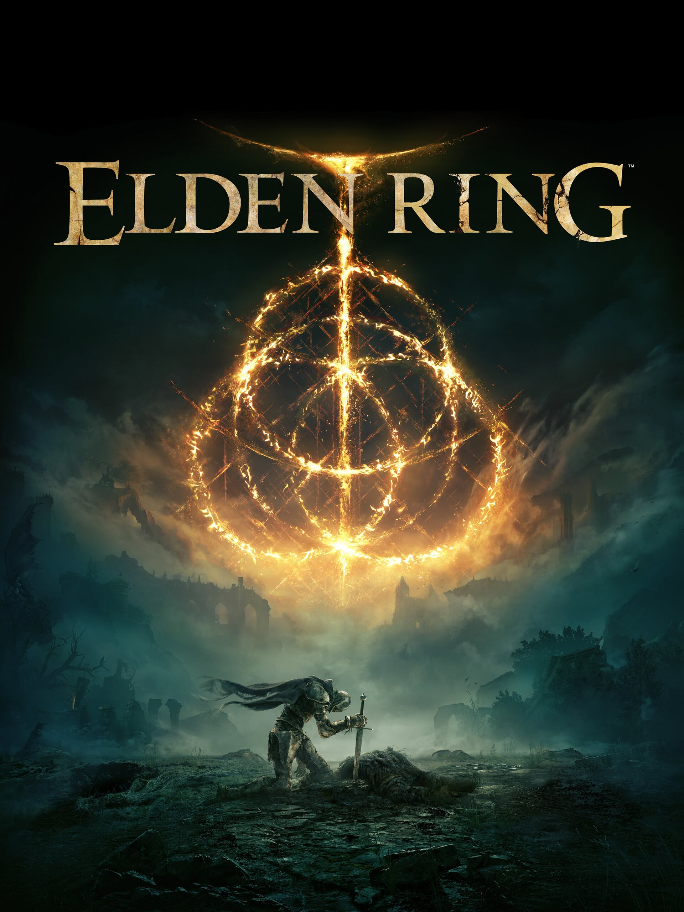
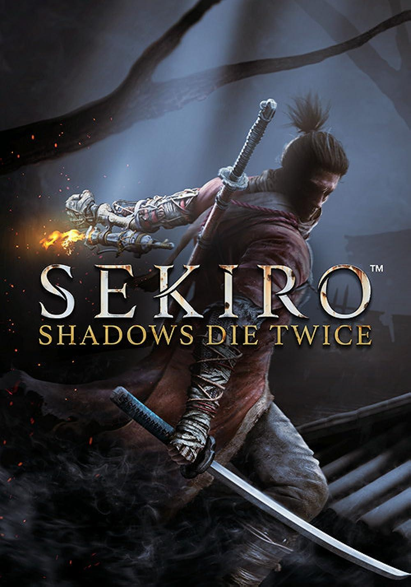
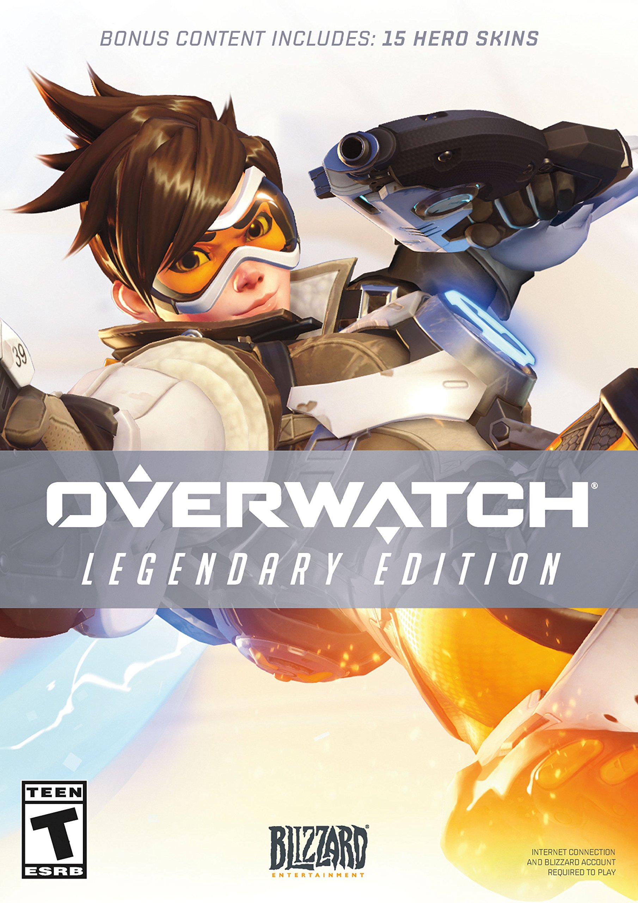

Elden Ring (goty 2022)
Elden Ring is an action role-playing game, set in third-person perspective. It includes elements that are similar to those in other FromSoftware-developed games such as the Dark Soul. The game is set in an open world;
it Takes Two (goty 2021)

It Takes Two is an action-adventure video game with elements from platform games. It is specifically designed for split-screen cooperative multiplayer, which means that it must be played with another player through either local or online play. The game features a large number of game mechanics from various video game genres.
The Last of Us Part 2 (goty 2020)

The Last of Us Part II is an action-adventure game played from a third-person perspective featuring elements of the survival horror genre. The player traverses post-apocalyptic environments such as buildings and forests to advance the story.
Sekiro: Shadows Die Twice (goty 2019)
Sekiro: Shadows Die Twice is an action-adventure game played from a third-person view. Compared to FromSoftware's Dark Souls series, the game features fewer role-playing elements, lacks character creation and the ability to level up a variety of stats, and has no multiplayer elements.
God of War (goty 2018)

God of War is a third-person action-adventure video game. It features an over-the-shoulder free camera, a departure from the previous installments, which featured a fixed cinematic camera (with the exception of 2007's two-dimensional side-scroller Betrayal). Cinematographically, the game is presented in a continuous shot, with no camera cuts or loading screens.
The Legend of Zelda: Breath of the Wild (goty 2017)

Breath of the Wild is an open world action-adventure game. Players are tasked with exploring the kingdom of Hyrule while controlling Link. Breath of the Wild encourages nonlinear gameplay, which is illustrated by the game's lack of defined entrances or exits to areas, scant instruction given to the player, and encouragement to explore freely.
Overwatch (goty 2016)
Overwatch was an online team-based game generally played as a first-person shooter. The game featured several different game modes, principally designed around squad-based combat with two opposing teams of six players each. Players selected one of over two dozen pre-made hero characters from one of three class types: Damage heroes that deal most of the damage to attack or defend control points, Tank heroes that can absorb a large amount of damage, and Support heroes that provide healing or other buffs for their teammates.